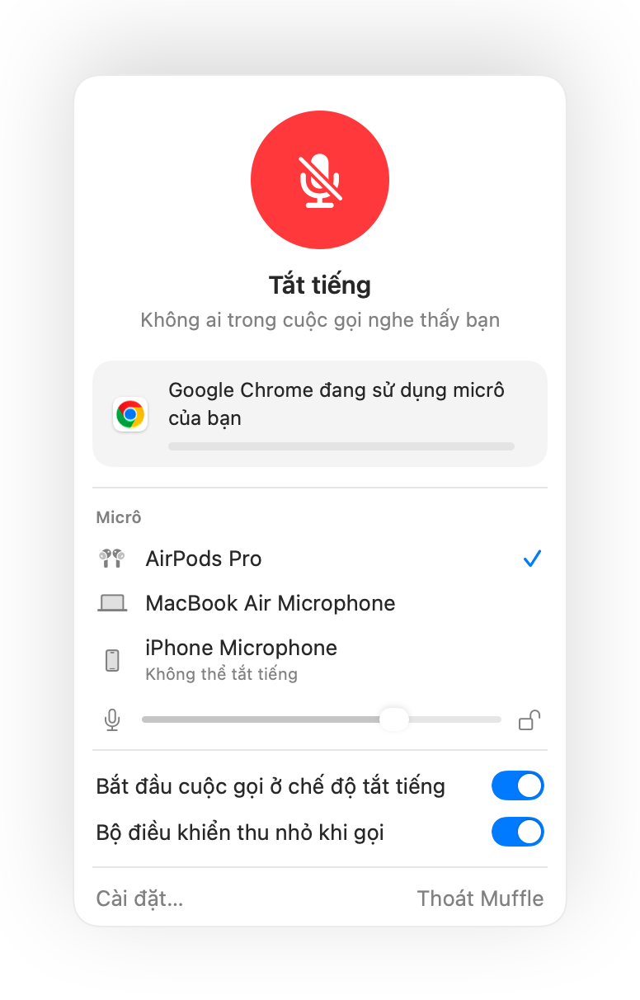
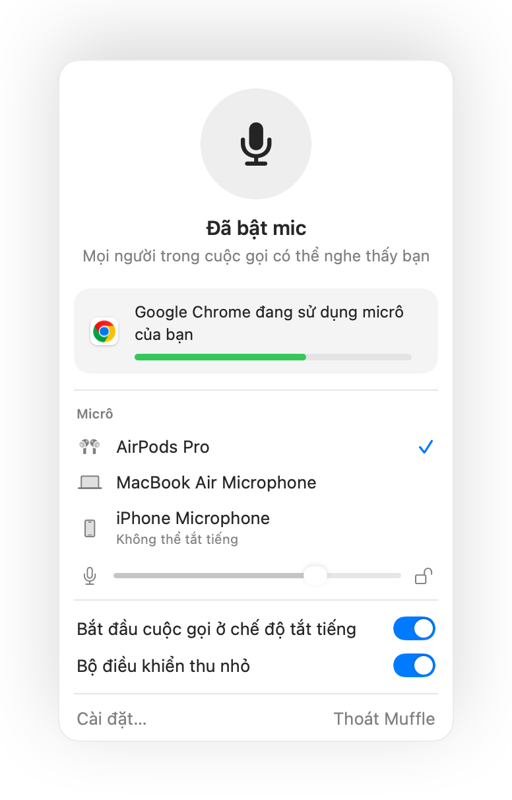
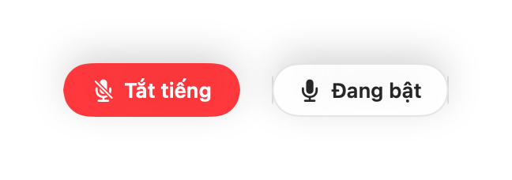
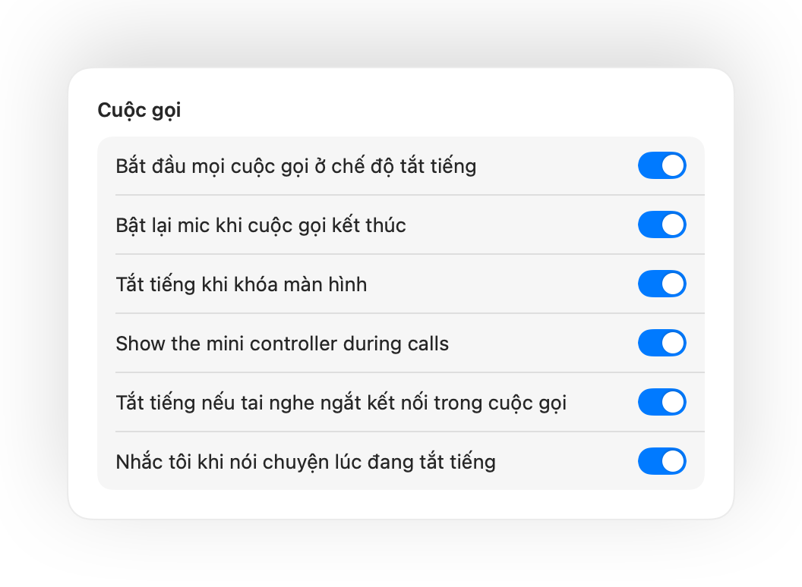
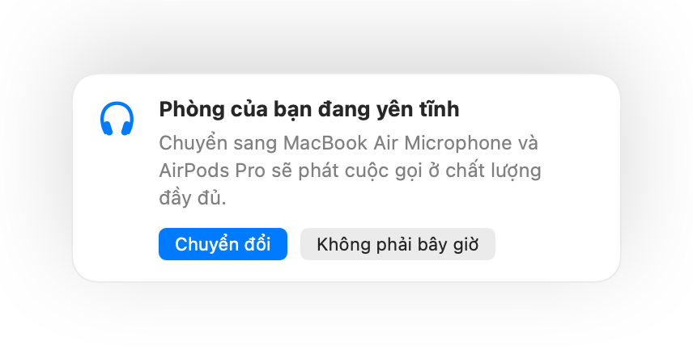
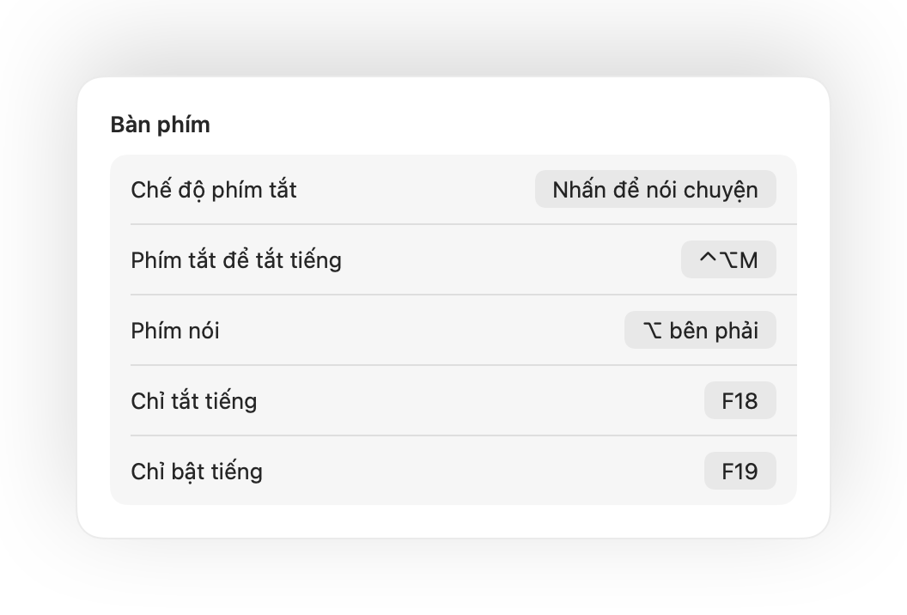
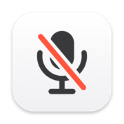

Nhấn AirPods của bạn.
Trong bất kỳ cuộc gọi nào, hãy nhấn vào thân tai nghe. Muffle sẽ trực tiếp tắt tiếng micrô, vì vậy Meet, Zoom, Teams và mọi ứng dụng khác đều không nghe thấy gì.

Muffle dành cho Mac
Nhấn AirPods của bạn hoặc một phím tắt bàn phím. Muffle trực tiếp tắt tiếng micrô, giúp Google Meet, Zoom, Teams, Slack và mọi ứng dụng khác hoàn toàn im lặng.
Dùng thử miễn phí 3 ngày. Mua một lần, không đăng ký thuê bao. Dành cho macOS 14 Sonoma trở lên.

Muffle tắt tiếng micrô ở cấp độ phần cứng, do đó ứng dụng, trình duyệt hay thẻ nào đang dùng micrô đều không quan trọng.
Trong bất kỳ cuộc gọi nào, hãy nhấn vào thân tai nghe. Muffle sẽ trực tiếp tắt tiếng micrô, vì vậy Meet, Zoom, Teams và mọi ứng dụng khác đều không nghe thấy gì.

Một phím tắt cho mọi ứng dụng, ngay cả khi cuộc gọi đang ở tab nền. Giữ để nói chuyện, hoặc chuyển sang nhấn để nói chuyện.
Muffle nhận biết giọng nói của bạn và nhắc nhở, trước khi bạn trình bày cả ý tưởng mà không ai nghe thấy.
Một nút nổi nhỏ hiển thị trạng thái micrô và tắt tiếng chỉ với một lần nhấp. Xanh lá là mic đang bật, đỏ là đã tắt tiếng.

Bắt đầu nói khi đang tắt tiếng và Muffle sẽ báo cho bạn ngay, trước khi bạn giải thích cả một ý tưởng dài mà không ai nghe thấy.
Trong bất kỳ cuộc gọi nào, nhấn vào thân tai nghe một lần để tắt tiếng và nhấn lại để bật tiếng. Tính năng này hoạt động mượt mà ngay cả trên Chrome, nơi Google Meet và các cuộc gọi trên web thường bỏ qua thao tác nhấn AirPods.
Control-Option-M giúp bạn tắt tiếng ở mọi nơi, ngay cả khi cuộc họp trực tuyến đang nằm ở thẻ nền. Giữ để nói chuyện khi đang tắt tiếng, thả ra để tắt tiếng trở lại.
Một nút nổi nhỏ hiển thị trạng thái micrô của bạn khi gọi video. Nhấp vào nút để tắt hoặc bật tiếng.
Bắt đầu mọi cuộc gọi ở chế độ tắt tiếng, bật lại mic khi cuộc gọi kết thúc và tắt tiếng mỗi khi bạn khóa màn hình Mac.

Bạn vừa bật tiếng để nói một câu? Nếu sau đó bạn im lặng trong khoảng thời gian đã chọn, Muffle sẽ tắt tiếng bạn trở lại. Ứng dụng chỉ tính giọng nói của bạn, tiếng gõ phím hay tiếng ồn nền đều không tính.
Chrome, Zoom và Teams thường tự ý thay đổi âm lượng micrô của bạn. Hãy khóa mức này lại và Muffle sẽ giữ nguyên cho bạn.
Khi dùng AirPods trong phòng yên tĩnh, Muffle gợi ý micrô của Mac để AirPods phát cuộc gọi ở chất lượng đầy đủ. Khi xung quanh ồn ào, ứng dụng sẽ gợi ý micrô của AirPods.

Chọn cách phím tắt hoạt động: chạm để chuyển đổi, giữ để nói chuyện hoặc giữ để tắt tiếng khi ho. Thêm các phím tắt và bật tiếng riêng biệt, hoặc giữ một phím như ⌥ bên phải hay nút chuột phụ.

Nếu tai nghe của bạn bị ngắt kết nối giữa cuộc gọi, Muffle sẽ tắt tiếng ngay trước khi cuộc gọi chuyển sang micrô tích hợp của Mac và làm lộ âm thanh cả phòng.
Tắt tiếng từ ứng dụng Phím tắt, Siri, Stream Deck, Raycast hoặc nút bấm trong Trung tâm điều khiển.
Viền màn hình phát sáng màu xanh lá hoặc đỏ, biểu tượng thanh menu đổi màu, nút nổi và âm thanh có thể tắt riêng cho từng micrô. Hãy bật những tùy chọn bạn thích.
Muffle không bao giờ ghi âm, lưu trữ hoặc gửi âm thanh. Ứng dụng chỉ bật tắt micrô của bạn và kiểm tra mức âm lượng. Không cần tài khoản, không theo dõi, không thu thập dữ liệu phân tích.
Cài đặt Muffle từ Mac App Store và cho phép truy cập micrô.
Tham gia cuộc gọi trong bất kỳ ứng dụng nào như bình thường.
Nhấn AirPods của bạn, nhấn Control-Option-M hoặc nhấp vào biểu tượng trên thanh menu để tắt tiếng.
Có. Chrome không gửi thao tác nhấn tắt tiếng trên AirPods đến cuộc gọi web, vì vậy Muffle sẽ nhận thao tác đó và trực tiếp tắt tiếng micrô. Mọi cuộc gọi khác trên thẻ trình duyệt cũng hoạt động tương tự.
Ứng dụng cuộc gọi của bạn có thể vẫn hiển thị micrô đang bật, vì Muffle tắt phần cứng micrô thay vì bấm nút trong ứng dụng. Dù thế nào thì mọi người cũng không nghe thấy bạn. Biểu tượng Muffle trên thanh menu sẽ chuyển sang màu đỏ khi bạn tắt tiếng.
AirPods Pro, AirPods 3 trở lên, AirPods Max, cùng các mẫu tai nghe Beats có hỗ trợ điều khiển cuộc gọi. Phím tắt bàn phím và thanh menu hoạt động với mọi micrô.
Có. Muffle hoạt động với mọi ứng dụng sử dụng micrô trên máy Mac của bạn, từ ứng dụng máy tính cho đến cuộc họp trên trình duyệt.
Không. Bạn có thể dùng thử miễn phí mọi tính năng trong 3 ngày, sau đó mở khóa Muffle bằng một lần mua duy nhất.
macOS chỉ chuyển thao tác nhấn AirPods đến những ứng dụng đang dùng micrô, nên Muffle sẽ duy trì một kết nối im lặng khi gọi. Ứng dụng hoàn toàn không ghi âm.
Muffle sẽ tự động bật lại micrô khi thoát ứng dụng, nên bạn sẽ không bao giờ bị kẹt ở trạng thái tắt tiếng.
macOS 14 Sonoma trở lên. Nút bấm trong Trung tâm điều khiển yêu cầu macOS 26 trở lên.
Có. Chọn “Nhấn để nói chuyện” trong Cài đặt và giữ phím tắt của bạn để nói. Bạn cũng có thể giữ một phím đơn như ⌥ bên phải hoặc fn, hoặc một nút chuột phụ.
Khi cuộc gọi dùng micrô AirPods, AirPods sẽ chuyển sang chế độ cuộc gọi khiến âm thanh phát ra có chất lượng thấp hơn. Trong phòng yên tĩnh, Muffle sẽ gợi ý micrô của Mac để AirPods tiếp tục phát ở chất lượng đầy đủ.
Không. Muffle nhận biết giọng nói bằng công nghệ phân tích âm thanh ngay trên thiết bị của Apple, vì vậy chỉ tính khi bạn nói chuyện. Tiếng gõ phím, tiếng nhấp chuột và tiếng ồn nền đều không tính, đồng thời không có gì được ghi âm.
Câu trả lời ngắn gọn, thực tế để tắt tiếng micrô trên Mac trong mọi ứng dụng.

Dùng thử Muffle miễn phí trong 3 ngày.